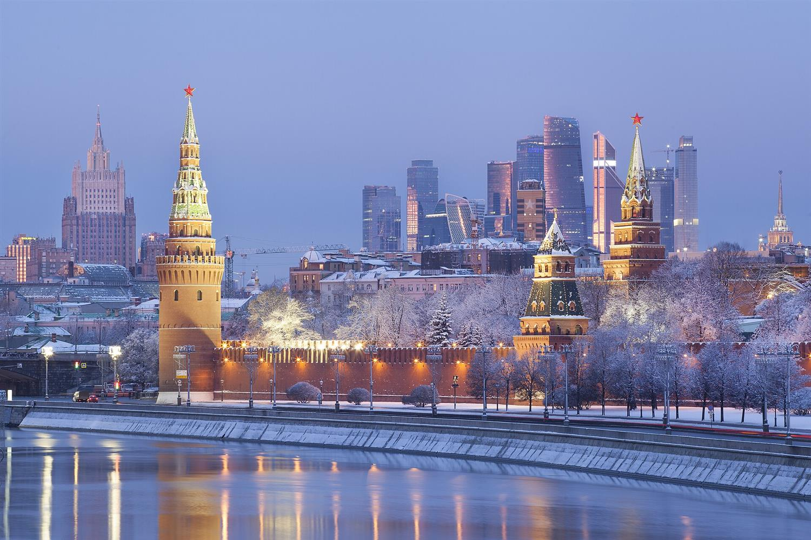
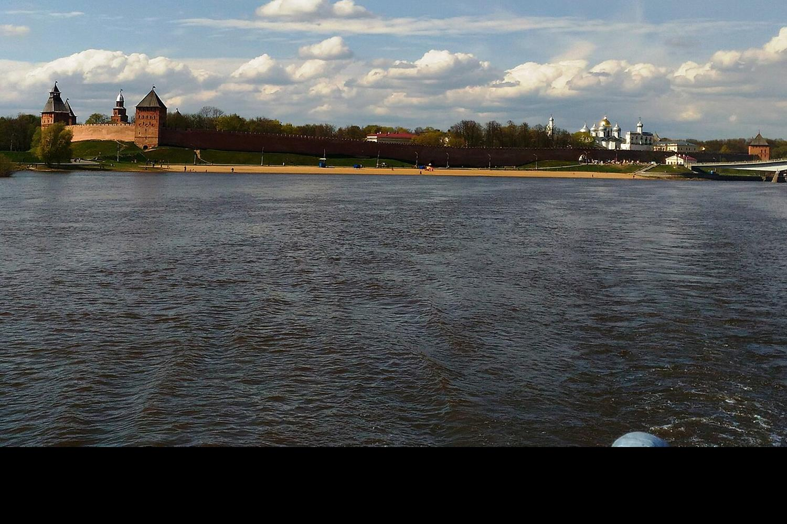
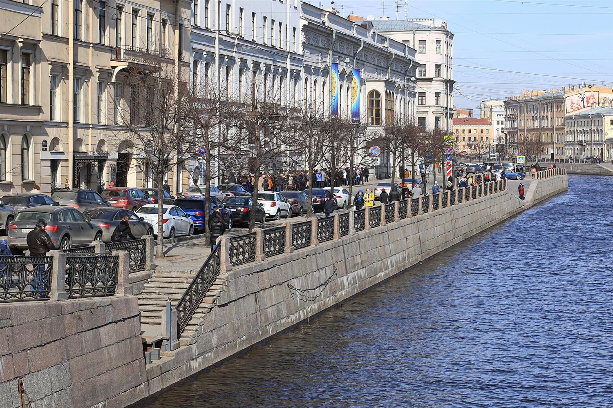

Адвокат по уголовным и гражданским делам
Защита, когда на кону свобода и репутация. Споры граждан и компаний в судах и арбитраже. Москва, Санкт-Петербург, Великий Новгород.
Обсудить делоАдвокатская тайна
Всё, что вы расскажете адвокату, остаётся между вами и адвокатом. Так устроен закон, и на этом держится защита.
Сведения, связанные с оказанием юридической помощи, составляют адвокатскую тайну (статья 8 Федерального закона № 63-ФЗ «Об адвокатской деятельности и адвокатуре в Российской Федерации»). Это не зависит ни от обвинения, ни от суммы спора, ни от того, кто обращается.
Как устроена работа
АдвокатМосква · Санкт-Петербург · Великий Новгород
Я адвокат по уголовным и гражданским делам. Защищаю подозреваемых и обвиняемых, представляю граждан и компании в судах общей юрисдикции и в арбитражном суде.
С любого дела начинаю с вопроса, что в нём важнее всего: свобода, деньги, бизнес или имя. От ответа зависят и стратегия, и порядок действий.
Работаю там, где высокие ставки и мало времени: срок задержания, срок обжалования, срок исковой давности. Результат не обещаю: исход зависит от обстоятельств дела и решения суда. Обещаю другое: честную оценку перспектив до подписания соглашения и добросовестную защиту после.
Дело ведётся по соглашению об оказании юридической помощи. Всё, что вы сообщаете, защищено адвокатской тайной.
Первые 48 часов после задержания
Эти часы решают многое. Двигайте ползунок и смотрите, что происходит по закону и что делает адвокат в каждый момент.
48 часов с момента задержания
Справочная информация по Уголовно-процессуальному кодексу РФ. Не заменяет консультацию по вашему делу.
Сразу
- Задержание. Вы вправе не свидетельствовать против себя и пользоваться помощью адвоката (статьи 48 и 51 Конституции РФ).0 ч
- Протокол задержания составляют не позднее 3 часов с момента доставления (статья 92 УПК РФ). Адвокат проверяет основания и сроки.до 3 ч
- До первого допроса — свидание с адвокатом наедине и конфиденциально (статья 46 УПК РФ). Позицию согласуют до слов следователю.до допроса
В первые сутки
- Прокурора и близких родственников уведомляют о задержании в течение 12 часов (статьи 92 и 96 УПК РФ). Адвокат следит, чтобы это сделали.до 12 ч
- Если просят арест, адвокат готовит возражения и предлагает альтернативы: залог, домашний арест, подписку о невыезде.заседание
К концу вторых суток
- Суд избирает меру пресечения, либо задержанного освобождают: дольше 48 часов без решения суда держать нельзя (статья 94 УПК РФ).до 48 ч
Решение принимается в пределах двух суток, поэтому адвоката зовут в первый час, а не на вторые сутки.
Три города на одной трассе



-
Москва
Доверители из столицы и ближнего Подмосковья: руководители предприятий, собственники бизнеса, предприниматели, публичные люди.
- Московский городской судобщая юрисдикция
- Арбитражный суд города Москвыарбитраж
-
Великий Новгород
Здесь обращаются все, кому нужна защита или представитель в суде, и по уголовным, и по гражданским делам.
- Новгородский областной судобщая юрисдикция
- Арбитражный суд Новгородской областиарбитраж
-
Санкт-Петербург
Те же задачи, что и в Москве: защита по уголовным делам, споры собственников и компаний.
- Санкт-Петербургский городской судобщая юрисдикция
- Арбитражный суд Санкт-Петербурга и Ленинградской областиарбитраж
Чем занимаюсь
Как начинается работа
Без анкет и долгих переговоров. Подробности дела не нужны даже в заявке: достаточно имени и способа связи.
Сначала
- Заявка: имя и как с вами связатьсябез подробностей
- Короткий конфиденциальный разговор о сути деласуть
Затем
- Оценка перспектив и стратегия, честно и до подписанияустно
- Соглашение об оказании юридической помощи, гонорар фиксируетсяписьменно
Дальше
- Ведение дела: следствие, суд, обжалованиедо результата
- Связь по делу в формате, который удобен вампо договорённости
Понятный план и защита по соглашению
Частые вопросы
Сколько стоит работа? Гонорар определяется соглашением и зависит от стадии, сложности и объёма работы. Сумма называется на первом разговоре, до подписания, и фиксируется письменно.
Можно ли рассказать всё по телефону? Сведения, связанные с оказанием юридической помощи, составляют адвокатскую тайну. Но по каналам связи лучше ограничиться сутью, остальное обсудить лично.
Вы гарантируете результат? Нет, и адвокат не вправе его гарантировать: исход зависит от обстоятельств и решения суда. Гарантировать можно честную оценку перспектив, соблюдение ваших прав и добросовестную защиту.
Что делать, если близкого задержали прямо сейчас? Оставьте заявку как можно раньше. До встречи с адвокатом не давать показаний и не подписывать протоколы не читая: на это есть право по статье 51 Конституции РФ.
Вы работаете с компаниями? Да: арбитражные споры, взыскание, корпоративные конфликты, а также защита руководителей и собственников по уголовным делам.
Как вы относитесь к огласке? Сведения о деле не раскрываются: это адвокатская тайна. Позицию для публики обсуждаем с вами отдельно и только если она нужна.
Работаете только в трёх городах? Основная практика: Москва, Санкт-Петербург, Великий Новгород. Дела в других регионах обсуждаются отдельно, по обстоятельствам.
Нужно ли описывать дело в заявке? Не нужно. Имени и способа связи достаточно, суть расскажете в разговоре.
Обсудить дело
Оставьте имя и способ связи. Подробности дела не пишите: их лучше рассказать в личном разговоре, под защитой адвокатской тайны.
Москва · Санкт-Петербург · Великий Новгород